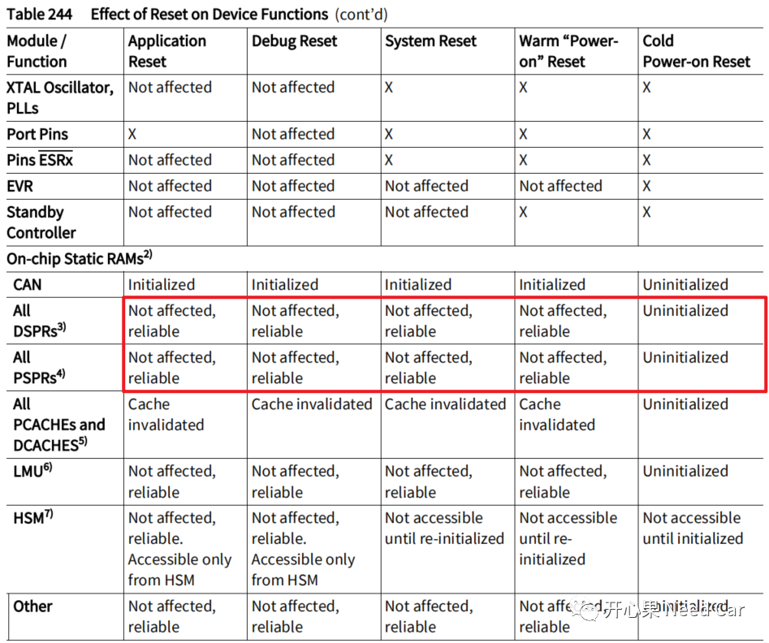
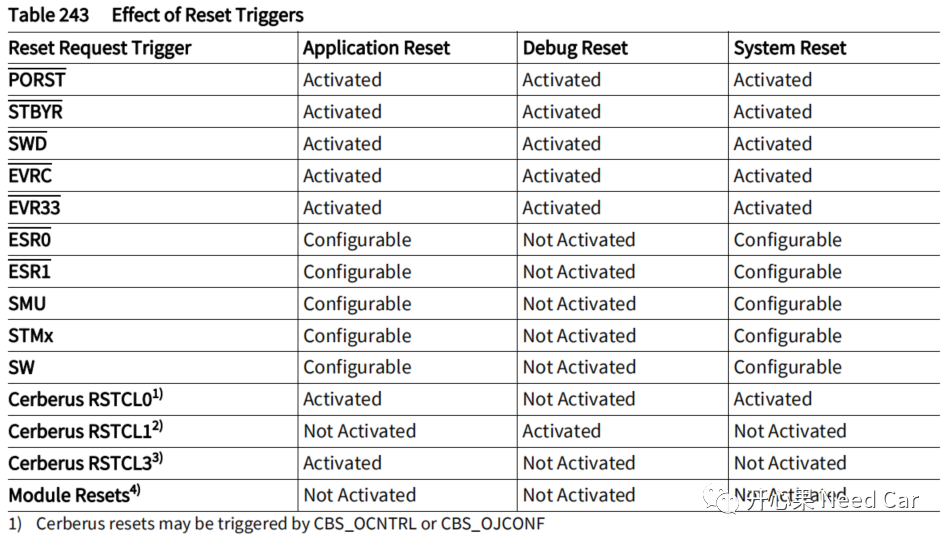
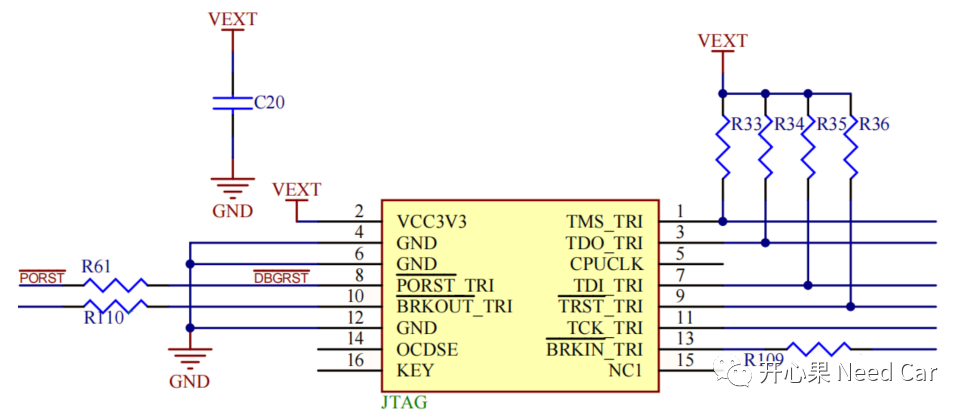
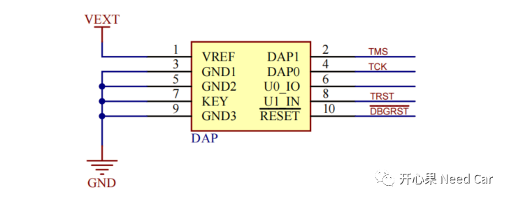
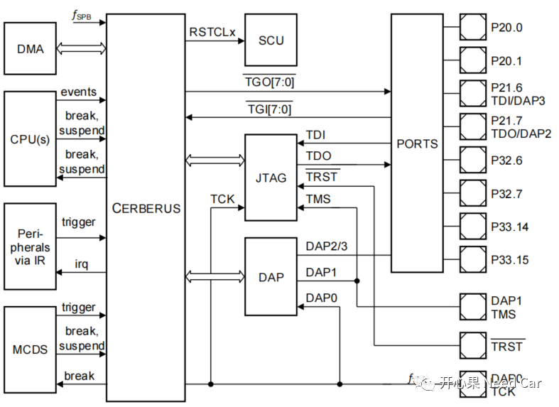
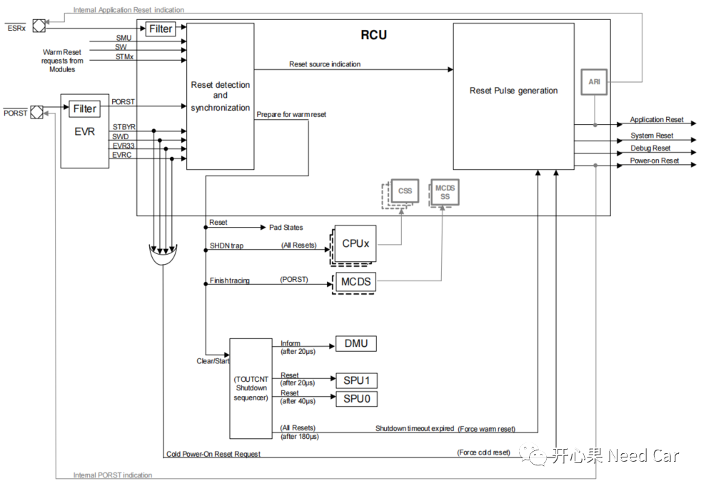
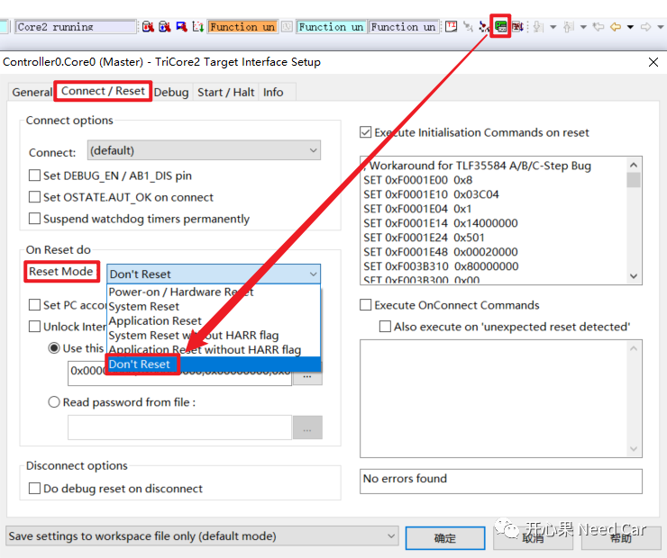

开心果 Need Car · 2022-10-29T14:13:00+08:00 · 微信原文
因为*.bss段会映射到RAM区（DSPR：Data Scratch-Pad SRAM），所以，在弄清楚*.bss段为什么会自动清零之前，我们先了解一下Reset对RAM区域的影响。
查看TC3xx的用户手册，发现：除了Cold power-on Reset以外，其他Reset类型，对DSPR和PSPR没有影响，也就是说，实际上，非Cold power-on Reset对RAM区（DSPR）没有影响，为什么软复位后，对应的*.bss RAM区（DSPR）清零了呢？Reset类型对RAM区的影响如下所示：

注意：Cold Power-on Reset，RAM区受影响，会初始化为0x00。诊断服务的$10 02/82，一般对应Application Reset或者System Reset。调试器的DAP(Debug Access Port)/JTAG（Joint Test Action Group）调试口对应Debug Reset。
不同Reset请求，触发的Reset方式，如下所示：

1、链接文件（*.lsl）
本文基于HighTec编译器讨论。链接文件（*.lsl）中，会将所有的*.bss段的起始地址和对应的长度记录，形成一个Table表，即：__clear_table。代码中所有未初始化的全局变量，或者初始化为零的全局变量，启动代码会按照__clear_table记录的*.bss段起始地址和长度完成清零动作。__clear_table示意如下：
....../** Create the clear and copy tables that tell the startup code* which memory areas to clear and to copy, respectively.*/PROVIDE(__clear_table = .);LONG(0 + ADDR(.CPU5.zbss)); LONG(SIZEOF(.CPU5.zbss));LONG(0 + ADDR(.CPU5.bss)); LONG(SIZEOF(.CPU5.bss));LONG(0 + ADDR(.CPU5.lmubss)); LONG(SIZEOF(.CPU5.lmubss));......LONG(-1); LONG(-1);......
ADDR(.CPU5.zbss)表示获取".CPU5.zbss"段的地址；
LONG(0 + ADDR(.CPU5.zbss))意思是".CPU5.zbss"段地址占用4个字节;
LONG(SIZEOF(.CPU5.zbss))意思是".CPU5.zbss"段的长度占用4个字节；
LONG(-1)等价于0xFFFFFFFF，主要用于标识清零操作的结束。
即：4字节存储".CPU5.zbss"段地址+4字节存储".CPU5.zbss"段长度，以此类推，其他*.bss段对应的RAM区也这样存储（存储到PFlash），以便于启动代码查找需要清零的RAM区地址和长度。
__clear_table对应的*.map文件如下所示：
0x0000000080100444 PROVIDE (__clear_table, .)0x0000000080100444 0x4 LONG 0x10000000 (0x0 + ADDR (.CPU5.zbss))0x0000000080100448 0x4 LONG 0x0 SIZEOF (.CPU5.zbss)
__copy_table操作，类似__clear_table。__copy_table在链接文件中，需要定义源地址、目标地址、长度，示意如下：
PROVIDE(__copy_table = .);LONG(LOADADDR(.CPU5.zdata)); LONG(0 + ADDR(.CPU5.zdata)); LONG(SIZEOF(.CPU5.zdata));LONG(LOADADDR(.CPU5.data)); LONG(0 + ADDR(.CPU5.data)); LONG(SIZEOF(.CPU5.data));LONG(LOADADDR(.CPU5.lmudata)); LONG(0 + ADDR(.CPU5.lmudata)); LONG(SIZEOF(.CPU5.lmudata));LONG(LOADADDR(.CPU4.zdata)); LONG(0 + ADDR(.CPU4.zdata)); LONG(SIZEOF(.CPU4.zdata));LONG(LOADADDR(.CPU4.data)); LONG(0 + ADDR(.CPU4.data)); LONG(SIZEOF(.CPU4.data));......
__copy_table对应的*.map文件如下所示：
0x0000000080100514 PROVIDE (__copy_table, .)0x0000000080100514 0x4 LONG 0x80000200 LOADADDR (.CPU5.zdata)0x0000000080100518 0x4 LONG 0x10000000 (0x0 + ADDR (.CPU5.zdata))0x000000008010051c 0x4 LONG 0x0 SIZEOF (.CPU5.zdata)
启动文件（eg：Ifx_Ssw_Tc0.c）中，会有一个对变量初始化操作的接口（Ifx_Ssw_C_InitInline()），如下所示：
/* Initialization of C runtime variables */void Ifx_Ssw_C_Init(void){Ifx_Ssw_C_InitInline();}
这个函数，干两件事：初始化没有赋值的全局变量，给有初始值的全局变量赋初始值。Ifx_Ssw_C_InitInline()内容如下所示：
extern unsigned int __clear_table[]; /**< clear table entry */extern unsigned int __copy_table[]; /**< copy table entry */IFX_SSW_INLINE void Ifx_Ssw_C_InitInline(void){Ifx_Ssw_CTablePtr pBlockDest, pBlockSrc;unsigned int uiLength, uiCnt;unsigned int *pTable;/* clear table */pTable = (unsigned int *)&__clear_table;while (pTable){pBlockDest.uiPtr = (unsigned int *)*pTable++;uiLength = *pTable++;/* we are finished when length == -1 */if (uiLength == 0xFFFFFFFF){break;}/* ALIGN == 8 */uiCnt = uiLength / 8;while (uiCnt--){*pBlockDest.ullPtr++ = 0;}if (uiLength & 0x4){*pBlockDest.uiPtr++ = 0;}if (uiLength & 0x2){*pBlockDest.usPtr++ = 0;}if (uiLength & 0x1){*pBlockDest.ucPtr = 0;}}/* copy table */pTable = (unsigned int *)&__copy_table;while (pTable){pBlockSrc.uiPtr = (unsigned int *)*pTable++;pBlockDest.uiPtr = (unsigned int *)*pTable++;uiLength = *pTable++;/* we are finished when length == -1 */if (uiLength == 0xFFFFFFFF){break;}uiCnt = uiLength / 8;while (uiCnt--){*pBlockDest.ullPtr++ = *pBlockSrc.ullPtr++;}if (uiLength & 0x4){*pBlockDest.uiPtr++ = *pBlockSrc.uiPtr++;}if (uiLength & 0x2){*pBlockDest.usPtr++ = *pBlockSrc.usPtr++;}if (uiLength & 0x1){*pBlockDest.ucPtr = *pBlockSrc.ucPtr;}}}




调试器Reset模式设置
使用UDE调试时，如果单击"Reset"按键，实现RAM区不清零，可以进行如下设置，Reset Mode选择"Don't Reset"：

往期精彩回顾